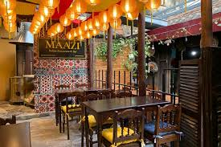
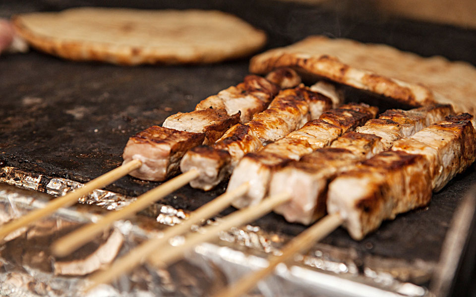
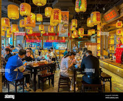
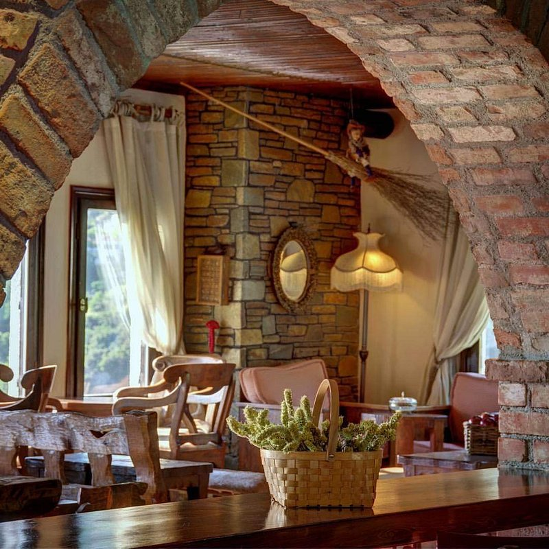
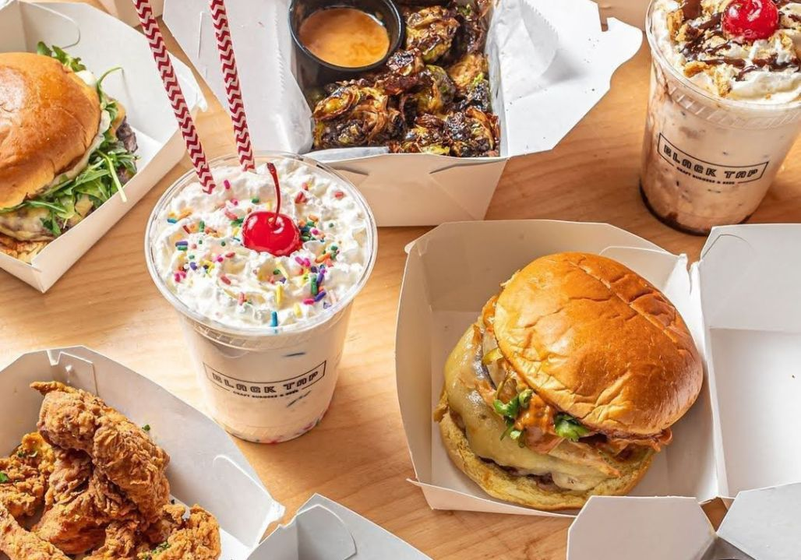
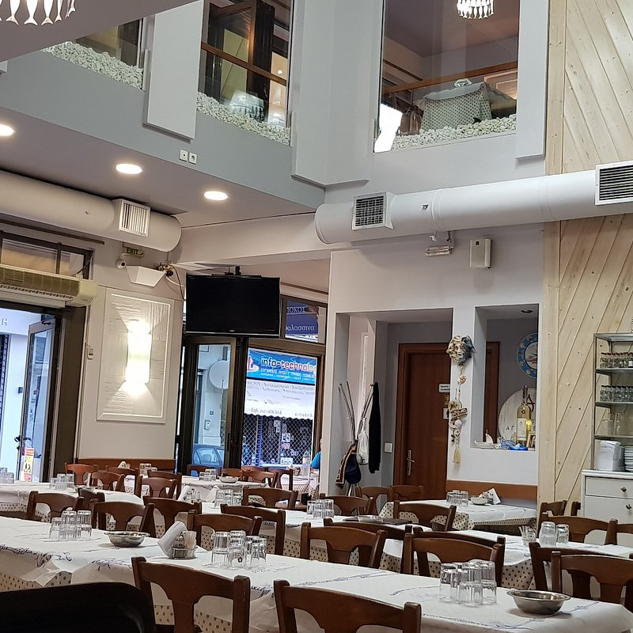
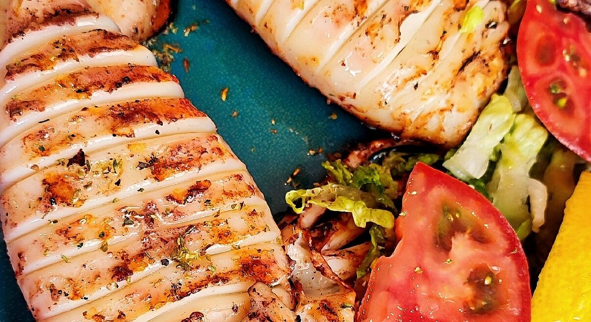

1. Bakalogatos
(10814 reviews)
• Open now
🍴 International, Mediterranean · 20$ per person
“When it was time to eat, we were deservedly rewarded!”
“Marvellous! Fantastic french cuisine...”
“Marvellous! Fantastic french cuisine...”

2. Hubbly_Habibi
(5678 reviews)
• Open now
🍴 Indian food, Mediterranean · 25$
“Really delicious food and really lovely staff.”
“Marvellous! Fantastic Indian cuisine.”
“Marvellous! Fantastic Indian cuisine.”

3. Nodas Grilled Food
(8754 reviews)
• Open now
🍴 Greek Grilled food, Mediterranean · 10$
“Best dinner for two!”
“Delicious Greek cuisine in the most atmospheric restaurant!”
“Delicious Greek cuisine in the most atmospheric restaurant!”

4. Alfredo Pasta
(3450 reviews)
• Open now
🍴 Italian food, Mediterranean · 25$
“The food here was absolutely amazing!”
“We got multiple pasta dishes!”
“We got multiple pasta dishes!”

5. Zorba’s Grill
(4243 reviews)
• Open now
🍴 Greek, Mediterranean · $$
“Authentic Greek flavors in every bite.”
“The moussaka and souvlaki were perfect!”
“The moussaka and souvlaki were perfect!”

6. Sushi Zen
(6103 reviews)
• Open now
🍴 Japanese, Sushi · $$$
“Fresh and beautifully presented.”
“Best sushi I’ve had outside of Japan.”
“Best sushi I’ve had outside of Japan.”

7. Mushroom House
(8743 reviews)
• Open now
🍴 Mediterranean Cuisine · $$
“Rich in flavor and spices!”
“The butter chicken with mushrooms is out of this world.”
“The butter chicken with mushrooms is out of this world.”

8. Burger Haven
(12043 reviews)
• Open now
🍴 American, Fast Food · $
“Juicy burgers and crispy fries!”
“Great value and fast service.”
“Great value and fast service.”

9. Taverna Ellas
(6590 reviews)
• Open now
🍴 Traditional Greek Cuisine · $$
“A true taste of Greece!”
“The lamb kleftiko and village salad were unforgettable.”
“The lamb kleftiko and village salad were unforgettable.”

10. Thalassa Mare
(4930 reviews)
• Open now
🍴 Seafood, Mediterranean · $$$
“The grilled octopus was melt-in-your-mouth delicious!”
“Perfect seaside vibe with fresh daily catch.”
“Perfect seaside vibe with fresh daily catch.”